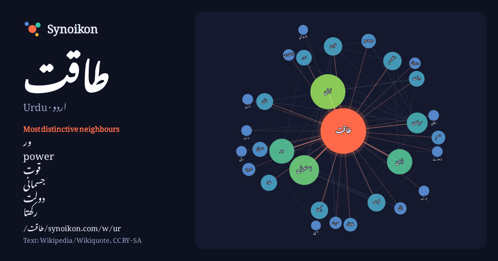

اردو · Urdu · popular word
طاقت
“power” · The words found around it in 832 instances from Urdu Wikipedia, Wikiquote.

Most distinctive neighbours
- ور 26×
- power 12×
- قوت 12×
- جسمانی 9.6×
- دولت 8.9×
- رکھتا 8.9×
- زور 8.6×
- بڑی 8.6×
- جوہری 8.0×
- عظیم 7.6×
- علاقائی 7.6×
- عالمی 7.5×
- سیاسی 7.5×
- استعمال 7.5×
- اپنی 7.1×
- بورک 6.9×
- واٹ 6.7×
- درمیانی 6.6×
- عروج 6.5×
- اقتصادی 6.5×
× = how many times more often than in general Urdu Wikipedia text.
Most frequent neighbours
- میں 185
- سے 145
- کا 128
- کو 128
- اس 87
- یا 78
- اپنی 65
- نے 52
- جو 49
- استعمال 47
- کر 43
- کرنے 38
- لیے 36
- نہیں 35
- بڑی 34
- ور 33
- وہ 33
- جس 32
- ان 31
- بھی 30
In context
- پیدا کرنے یا توانائی (انگریزی: energy) خرچ کرنے یا کام کرنے کی رفتار کو طاقت (انگریزی: power) کہتے ہیں۔ اگر ایک موٹر پمپ سے پانی کی ٹنکی بھرنے میں دو Wikipedia snippets · طاقت
- اسپی طاقت (horsepower) جسے فرسیہ توانائی یا فرسیہ طاقت بھی کہاجاتا ہے، دراصل طاقت کے لیے استعمال ہونی والی کئی پیمائشی اکائیات کا نام ہے۔ اِس کو عموماً Wikipedia snippets · اسپی طاقت
- قومی طاقت شمار خام ملکی پیداوار، دفاعی اخراجات، آبادی اور ٹیکنالوجی کا مشعر ماحاصل ہے۔ گوگل پبلک ڈیٹا ایکسپلورر (google public data explorer) ان اقدار Wikipedia snippets · اشاریہ قومی طاقت
- عالمی طاقت (superpower)، سے مراد ایک ایسی ریاست ہے جو عالمی نظام میں سربراہانہ مقام رکھنے کے ساتھ ساتھ بین الاقوامی (سیاسی اور اقتصادی) حالات و واقعات Wikipedia snippets · عالمی طاقت
- جامع قومی طاقت (Comprehensive National Power) (چینی: 综合 国力) عوامی جمہوریہ چین کے عام اقتدار کی معاصر سیاسی سوچ کی پیمائش کا ایک مفروضی طریقہ ہے۔ مشعر مخلوط Wikipedia snippets · جامع قومی طاقت
- طاقت کے بہاؤ کو پڑھنے کا مقصد یہ ہے کہ برقی سپلائی کرنے والی کمپنی اپنے سسٹم کی ضروریات کے مطابق مستقبل کی منصوبہ بندی کر سکے۔ اس میں ہم ہر بس یا لائین Wikipedia snippets · مسئلہ طاقت کا بہاؤ
- طاقت (انگریزی: Power) کو بین الاقوامی تعلقات میں مختلف طریقوں سے بیان کیا جاتا ہے۔ عام طور پر ریاستی طاقت کے معاملے میں بولی جاتی ہے، جو معاشی اور فوجی Wikipedia snippets · طاقت (بین الاقوامی تعلقات)
- طاقت قانون دو اقدار کے درمیان ایک خاص قسم کا ریاضیاتی تعلق ہے۔ اگر ایک قدر کسی واقعہ کا تعدد ہے تو تعلق توزیع ہے اور تعدد نسبتاً آہستہ گھٹتا ہے جیسے واقعہ Wikipedia snippets · طاقت کا قانون
More Urdu words
Precomputed on 2026-10-09 with default settings (±5 words, medium corpus). The interactive map can refresh it with live data.